Capítulo 6 Análisis de Regresión: De la Inferencia a la Predicción con R
Objetivo del capítulo: Proporcionar una guía integral y práctica para comprender, estimar, diagnosticar e interpretar modelos de regresión lineal, diferenciando entre objetivos de inferencia estadística y predicción, con implementaciones reproducibles en R que siguen las mejores prácticas de ciencia de datos moderna.
Al completar este capítulo podrás:
- Diferenciar entre correlación y regresión, y explicar el rol fundamental del término de error
- Estimar e interpretar modelos de regresión lineal simple y múltiple usando
lm()y el ecosistematidyverse - Evaluar críticamente los supuestos del Modelo Clásico de Regresión Lineal (MCRL)
- Realizar inferencia estadística robusta (pruebas t, F, intervalos de confianza y predicción)
- Diagnosticar problemas comunes (heteroscedasticidad, autocorrelación, multicolinealidad, observaciones atípicas)
- Aplicar transformaciones, manejar variables categóricas y seleccionar modelos apropiados
- Implementar estrategias de validación y evaluación predictiva fuera de muestra
Prerrequisitos: Álgebra lineal básica, cálculo diferencial, probabilidad y estadística inferencial, manejo intermedio de R y RStudio.
6.1 Fundamentos del Análisis de Regresión
6.1.1 Introducción al Análisis de Regresión
6.1.1.1 ¿Qué es el análisis de regresión?
El análisis de regresión es una técnica estadística que estudia la dependencia de una variable respuesta \(Y\) (también llamada variable dependiente o endógena) respecto de una o más variables explicativas \(X_i\) (variables independientes, predictoras o exógenas). Su objetivo principal es modelar y cuantificar la relación para:
- Estimar el valor promedio condicional \(E(Y|X)\)
- Predecir valores futuros de \(Y\) dado \(X\)
- Inferir sobre la naturaleza y magnitud de las relaciones
- Controlar por el efecto de variables confusoras
Como señalan Harrell Jr (2015) y Gelman et al. (2020), la distinción entre estos objetivos es crucial para la especificación del modelo y la interpretación de resultados.
6.1.1.2 Regresión versus correlación
Es fundamental distinguir estos conceptos:
Correlación: Mide la fuerza y dirección de una asociación lineal simétrica entre dos variables. El coeficiente de correlación de Pearson \(r_{XY}\) trata ambas variables por igual.
Regresión: Modela una dependencia asimétrica de \(Y\) respecto de \(X\), donde \(Y\) es la variable “respuesta” y \(X\) la variable “explicativa”. Busca estimar \(E(Y|X) = f(X)\).
6.1.1.3 Tipología de variables
Siguiendo la taxonomía de Bruce et al. (2020), clasificamos las variables según su naturaleza:
Variables respuesta (\(Y\)): - Continuas: Pueden tomar cualquier valor en un intervalo (ej: peso, ingreso) - Discretas: Valores enteros contables (ej: número de hijos) - Categóricas: Nominales u ordinales (tratadas en modelos lineales generalizados)
Variables explicativas (\(X_i\)): - Cuantitativas: Continuas o discretas con significado numérico - Cualitativas: Categóricas que requieren codificación (variables dummy)
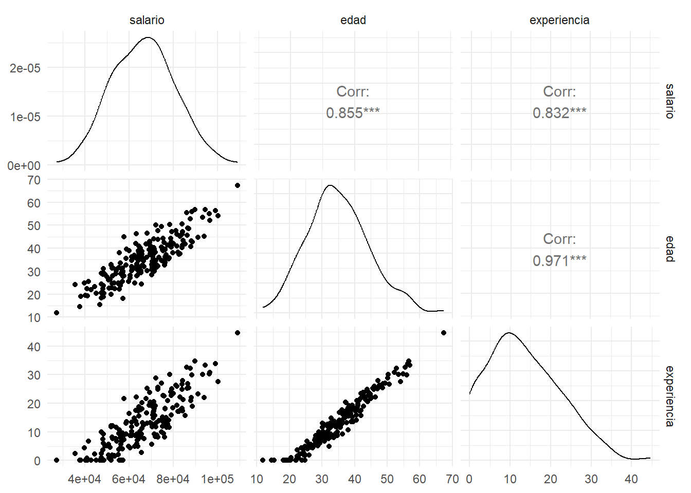
6.1.1.4 El término de perturbación \(\varepsilon\)
El término de error \(\varepsilon\) es central en el análisis de regresión y captura:
- Variables omitidas: Factores relevantes no incluidos en el modelo
- Error de medición: Imprecisiones en la medición de variables
- Forma funcional incorrecta: Relaciones no lineales aproximadas linealmente
- Variabilidad inherente: Componente aleatorio genuino del fenómeno
La especificación correcta de \(\varepsilon\) es crucial para la validez de la inferencia estadística (Gujarati and Porter 2009).
6.1.2 El Modelo de Regresión Lineal Simple
6.1.2.1 Formulación del modelo
El modelo de regresión lineal simple se expresa como:
\[\begin{equation} Y_i = \beta_0 + \beta_1 X_i + \varepsilon_i, \quad i = 1, 2, \ldots, n \end{equation}\]
donde: - \(Y_i\): valor observado de la variable respuesta para la observación \(i\) - \(X_i\): valor de la variable explicativa para la observación \(i\) - \(\beta_0\): intercepto (ordenada al origen) - \(\beta_1\): pendiente (efecto marginal de \(X\) sobre \(Y\)) - \(\varepsilon_i\): término de error para la observación \(i\)
6.1.2.2 Función de regresión poblacional (FRP) vs. muestral (FRM)
- FRP: \(E(Y|X) = \beta_0 + \beta_1 X\) (parámetros poblacionales desconocidos)
- FRM: \(\hat{Y} = \hat{\beta}_0 + \hat{\beta}_1 X\) (estimadores muestrales)
6.1.2.3 Interpretación de parámetros
- \(\beta_0\): Valor esperado de \(Y\) cuando \(X = 0\) (si tiene sentido sustantivo)
- \(\beta_1\): Cambio esperado en \(Y\) por cada unidad adicional de \(X\)
| term | estimate | std.error | statistic | p.value | conf.low | conf.high |
|---|---|---|---|---|---|---|
| (Intercept) | 49055.079 | 1002.826 | 48.917 | 0 | 47077.488 | 51032.669 |
| experiencia | 1323.586 | 62.713 | 21.105 | 0 | 1199.914 | 1447.258 |
## `geom_smooth()` using formula = 'y ~ x'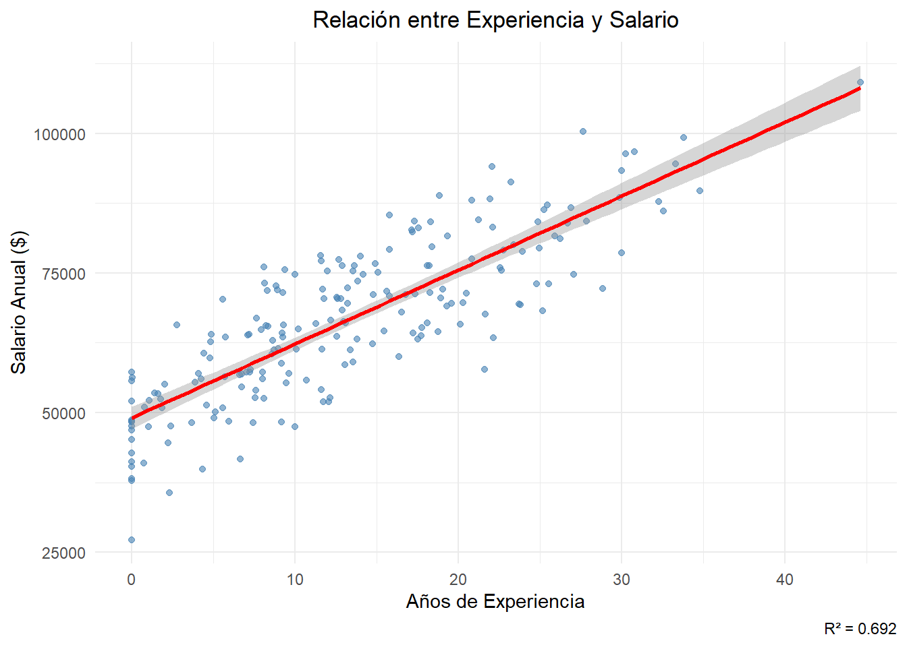
Interpretación práctica: Por cada año adicional de experiencia, el salario esperado aumenta en aproximadamente 1324 dólares, manteniendo todo lo demás constante.
6.1.3 El Modelo de Regresión Lineal Múltiple
6.1.3.1 Generalización matemática
El modelo de regresión múltiple extiende el caso simple a \(k\) variables explicativas:
\[\begin{equation} Y_i = \beta_0 + \beta_1 X_{1i} + \beta_2 X_{2i} + \cdots + \beta_k X_{ki} + \varepsilon_i \end{equation}\]
En notación matricial: \[\begin{equation} \mathbf{Y} = \mathbf{X}\boldsymbol{\beta} + \boldsymbol{\varepsilon} \end{equation}\]
donde: - \(\mathbf{Y}\) es un vector \(n \times 1\) de observaciones - \(\mathbf{X}\) es una matriz \(n \times (k+1)\) de diseño - \(\boldsymbol{\beta}\) es un vector \((k+1) \times 1\) de parámetros - \(\boldsymbol{\varepsilon}\) es un vector \(n \times 1\) de errores
6.1.3.2 Interpretación de coeficientes parciales (ceteris paribus)
En regresión múltiple, \(\beta_j\) representa el efecto marginal de \(X_j\) sobre \(Y\), manteniendo constantes todas las demás variables explicativas. Esto es crucial para el control de variables confusoras (Wooldridge 2015).
6.1.3.3 Linealidad en parámetros
El modelo es lineal en los parámetros \(\beta_j\), no necesariamente en las variables. Podemos incluir: - Transformaciones: \(\log(X)\), \(\sqrt{X}\), \(X^2\) - Interacciones: \(X_1 \times X_2\) - Variables dummy para categorías
| term | estimate | std.error | statistic | p.value | conf.low | conf.high |
|---|---|---|---|---|---|---|
| (Intercept) | 20692.466 | 3405.062 | 6.077 | 0.000 | 13976.989 | 27407.943 |
| edad | 997.822 | 156.220 | 6.387 | 0.000 | 689.725 | 1305.920 |
| experiencia | 297.930 | 164.206 | 1.814 | 0.071 | -25.917 | 621.778 |
| educacionSecundaria | 7319.872 | 833.352 | 8.784 | 0.000 | 5676.331 | 8963.412 |
| educacionUniversidad | 14576.768 | 918.700 | 15.867 | 0.000 | 12764.903 | 16388.632 |
| model | r.squared | adj.r.squared | AIC | BIC | p.value |
|---|---|---|---|---|---|
| simple | 0.6923 | 0.6907 | 4163.086 | 4172.980 | 0 |
| multiple | 0.8825 | 0.8801 | 3976.526 | 3996.316 | 0 |
Interpretación de educación: Controlando por edad y experiencia, tener educación universitaria se asocia con un incremento promedio de 7320 dólares en el salario comparado con educación primaria.
6.2 Supuestos del MCRL y Estimación MCO
6.2.1 Supuestos del Modelo Clásico de Regresión Lineal (MCRL)
6.2.1.1 Supuestos fundamentales
- Linealidad en parámetros: El modelo está correctamente especificado
- Exogeneidad estricta: \(E(\varepsilon_i|X_i) = 0\) para todo \(i\)
- Homoscedasticidad: \(\text{Var}(\varepsilon_i|X_i) = \sigma^2\) (varianza constante)
- No autocorrelación: \(\text{Cov}(\varepsilon_i, \varepsilon_j|X) = 0\) para \(i \neq j\)
- No multicolinealidad perfecta: \(\text{rank}(\mathbf{X}) = k+1\)
- Normalidad (para muestras pequeñas): \(\varepsilon_i \sim N(0, \sigma^2)\)
6.2.1.2 Implicaciones de violaciones
| Supuesto violado | Efecto en MCO | Inferencia afectada |
|---|---|---|
| Exogeneidad | Sesgo e inconsistencia | Sí |
| Homoscedasticidad | Ineficiencia | Errores estándar |
| No autocorrelación | Ineficiencia | Errores estándar |
| Multicolinealidad | Alta varianza | Significancia |
| Normalidad | - | Pruebas t/F (muestras pequeñas) |
6.2.1.3 Verificación práctica de supuestos
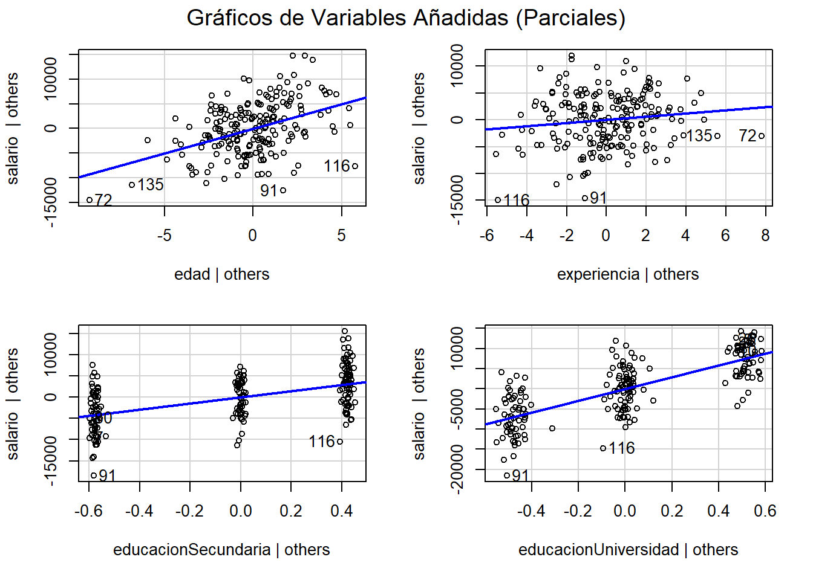
## `geom_smooth()` using method = 'loess' and formula = 'y ~ x'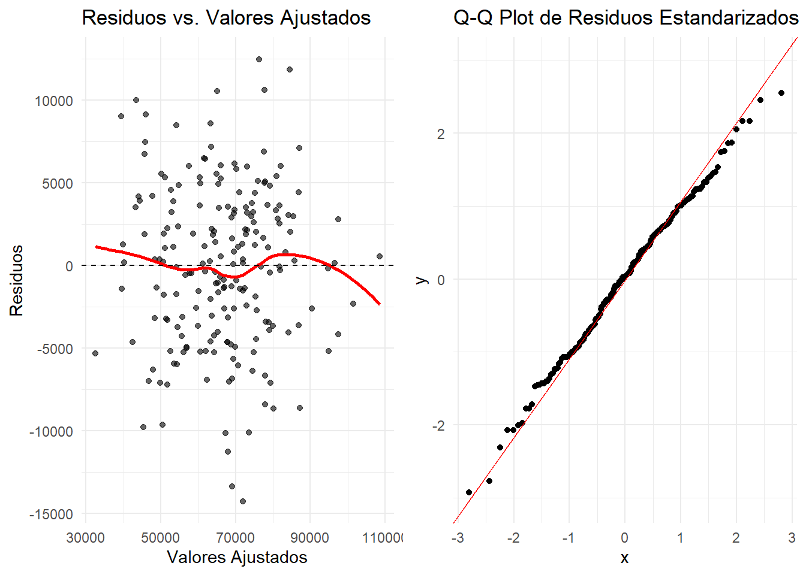
## Prueba de Breusch-Pagan (Homoscedasticidad):##
## studentized Breusch-Pagan test
##
## data: modelo_multiple
## BP = 8.8749, df = 4, p-value = 0.0643##
## Prueba de Shapiro-Wilk (Normalidad):##
## Shapiro-Wilk normality test
##
## data: residuals(modelo_multiple)
## W = 0.99557, p-value = 0.83026.2.2 Estimación por Mínimos Cuadrados Ordinarios (MCO)
6.2.2.1 Derivación del estimador
El estimador MCO minimiza la suma de cuadrados de residuos: \[\begin{equation} \min_{\boldsymbol{\beta}} \sum_{i=1}^n (Y_i - \mathbf{x}_i^{T}\boldsymbol{\beta})^2 \end{equation}\]
La solución analítica es: \[\begin{equation} \hat{\boldsymbol{\beta}} = (\mathbf{X}^{T}\mathbf{X})^{-1}\mathbf{X}^{T}\mathbf{Y} \end{equation}\]
6.2.2.2 Propiedades estadísticas
Bajo los supuestos del MCRL: - Insesgadez: \[\begin{equation} E[\hat{\boldsymbol{\beta}}|\mathbf{X}] = \boldsymbol{\beta} \end{equation}\] - Eficiencia: BLUE (Best Linear Unbiased Estimator) por el teorema de Gauss-Markov - Consistencia: \[\begin{equation} \text{plim}_{n \to \infty} \hat{\boldsymbol{\beta}} = \boldsymbol{\beta} \end{equation}\] - Normalidad asintótica: \[\begin{equation} \hat{\boldsymbol{\beta}} \xrightarrow{d} N(\boldsymbol{\beta}, \sigma^2(\mathbf{X}^{T}\mathbf{X})^{-1}) \end{equation}\]
| Coeficiente | MCO_manual | lm_function | Diferencia | |
|---|---|---|---|---|
| (Intercept) | (Intercept) | 20692.4663 | 20692.4663 | 0 |
| edad | edad | 997.8225 | 997.8225 | 0 |
| experiencia | experiencia | 297.9304 | 297.9304 | 0 |
| educacionSecundaria | educacionSecundaria | 7319.8716 | 7319.8716 | 0 |
| educacionUniversidad | educacionUniversidad | 14576.7678 | 14576.7678 | 0 |
6.2.2.3 Estimación de \(\sigma^2\)
El estimador insesgado de la varianza del error es: \[\begin{equation} \hat{\sigma}^2 = \frac{\sum_{i=1}^n \hat{\varepsilon}_i^2}{n-k-1} = \frac{\text{SCR}}{n-k-1} \end{equation}\]
donde SCR es la suma de cuadrados de los residuos y \(n-k-1\) son los grados de libertad.
6.3 Inferencia Estadística en Regresión
6.3.1 Distribución de los estimadores
Bajo normalidad de los errores: \[\begin{equation} \hat{\beta}_j \sim N\left(\beta_j, \sigma^2[(\mathbf{X}^{T}\mathbf{X})^{-1}]_{jj}\right) \end{equation}\]
El estadístico t estandarizado: \[\begin{equation} t = \frac{\hat{\beta}_j - \beta_j}{\text{se}(\hat{\beta}_j)} \sim t_{n-k-1} \end{equation}\]
6.3.2 Pruebas de hipótesis
6.3.2.1 Prueba t para coeficientes individuales
\[\begin{equation} H_0: \beta_j = 0 \quad \text{vs.} \quad H_1: \beta_j \neq 0 \end{equation}\]
| term | estimate | std.error | statistic | p.value | significancia |
|---|---|---|---|---|---|
| (Intercept) | 20692.4663 | 3405.0619 | 6.0770 | 0.0000 | *** |
| edad | 997.8225 | 156.2199 | 6.3873 | 0.0000 | *** |
| experiencia | 297.9304 | 164.2059 | 1.8144 | 0.0712 | . |
| educacionSecundaria | 7319.8716 | 833.3520 | 8.7836 | 0.0000 | *** |
| educacionUniversidad | 14576.7678 | 918.7004 | 15.8667 | 0.0000 | *** |
| Note: | |||||
| Códigos de significancia: 0 ‘’ 0.001 ’’ 0.01 ’’ 0.05 ‘.’ 0.1 ’ ’ 1 |
6.3.2.2 Prueba F para significancia conjunta
\[\begin{equation} H_0: \beta_1 = \beta_2 = \cdots = \beta_k = 0 \end{equation}\]
\[\begin{equation} F = \frac{(\text{SCT} - \text{SCR})/k}{\text{SCR}/(n-k-1)} \sim F_{k,n-k-1} \end{equation}\]
| Df | Sum Sq | Mean Sq | F value | Pr(>F) | |
|---|---|---|---|---|---|
| edad | 1 | 29583539075 | 29583539075 | 1212.4683 | 0.0000 |
| experiencia | 1 | 2991060 | 2991060 | 0.1226 | 0.7266 |
| educacion | 2 | 6149552056 | 3074776028 | 126.0183 | 0.0000 |
| Residuals | 195 | 4757889304 | 24399432 | NA | NA |
## Estadístico F: 366.157## p-valor: 1.85e-89## Conclusión: Rechazamos H0: al menos un coeficiente es significativo6.3.3 Intervalos de confianza y predicción
6.3.3.1 Intervalos de confianza para coeficientes
\[\begin{equation} \hat{\beta}_j \pm t_{\alpha/2, n-k-1} \times \text{se}(\hat{\beta}_j) \end{equation}\]
6.3.3.2 Intervalos de predicción
Para una nueva observación \(X_0\):
Intervalo de confianza para \(E(Y|X_0)\): \[\begin{equation} \hat{Y}_0 \pm t_{\alpha/2, n-k-1} \times \text{se}(\hat{Y}_0) \end{equation}\]
Intervalo de predicción para una nueva \(Y_0\): \[\begin{equation} \hat{Y}_0 \pm t_{\alpha/2, n-k-1} \times \sqrt{\text{se}^2(\hat{Y}_0) + \hat{\sigma}^2} \end{equation}\]
| 2.5 % | 97.5 % | |
|---|---|---|
| (Intercept) | 13976.99 | 27407.94 |
| edad | 689.72 | 1305.92 |
| experiencia | -25.92 | 621.78 |
| educacionSecundaria | 5676.33 | 8963.41 |
| educacionUniversidad | 12764.90 | 16388.63 |
| edad | experiencia | educacion | fit | lwr | upr | amplitud_intervalo |
|---|---|---|---|---|---|---|
| 30 | 5 | Universidad | 66694 | 56796 | 76592 | 19796 |
| 40 | 15 | Universidad | 79651 | 69780 | 89522 | 19742 |
| 50 | 25 | Secundaria | 85352 | 75460 | 95243 | 19783 |
6.4 Medidas de Bondad de Ajuste
6.4.1 Coeficiente de determinación R²
\[\begin{equation} R^2 = \frac{\text{SCE}}{\text{SCT}} = 1 - \frac{\text{SCR}}{\text{SCT}} \end{equation}\]
donde: - SCE = Suma de cuadrados explicada - SCR = Suma de cuadrados de residuos - SCT = Suma de cuadrados total
6.4.2 R² ajustado
Penaliza por el número de variables: \[\begin{equation} \bar{R}^2 = 1 - \frac{\text{SCR}/(n-k-1)}{\text{SCT}/(n-1)} \end{equation}\]
6.4.3 Limitaciones del R²
Como advierte Harrell Jr (2015): - No indica causalidad - Puede ser alto con modelo mal especificado - No es apropiado para comparar modelos no anidados - En predicción, preferir validación cruzada
| Métrica | Valor |
|---|---|
| R² | 0.8825 |
| R² ajustado | 0.8801 |
| Error estándar residual | 4939.5782 |
| AIC | 3976.5259 |
| BIC | 3996.3158 |
| Componente | Valor | Porcentaje |
|---|---|---|
| Suma Total de Cuadrados (SCT) | 40493971495 | 100.00 |
| Suma Explicada (SCE) | 35736082191 | 88.25 |
| Suma de Residuos (SCR) | 4757889304 | 11.75 |
| Verificación: SCE + SCR | 40493971495 | NA |
6.5 Diagnóstico del Modelo: Análisis de R
6.5.1 Tipos de Residuos
- Residuos ordinarios: \[\begin{equation} \hat{\varepsilon}_i = Y_i - \hat{Y}_i \end{equation}\]
- Residuos estandarizados: \[\begin{equation} \frac{\hat{\varepsilon}_i}{\hat{\sigma}} \end{equation}\]
- Residuos estudentizados: \[\begin{equation} \frac{\hat{\varepsilon}_i}{\hat{\sigma}_i\sqrt{1-h_{ii}}} \end{equation}\] donde \(h_{ii}\) es el leverage de la observación \(i\).
6.5.2 Gráficos de diagnósticos esenciales
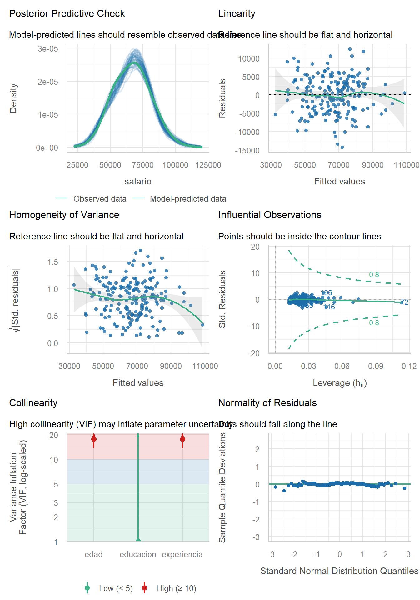
## `geom_smooth()` using formula = 'y ~ x'
## `geom_smooth()` using formula = 'y ~ x'
## `geom_smooth()` using formula = 'y ~ x'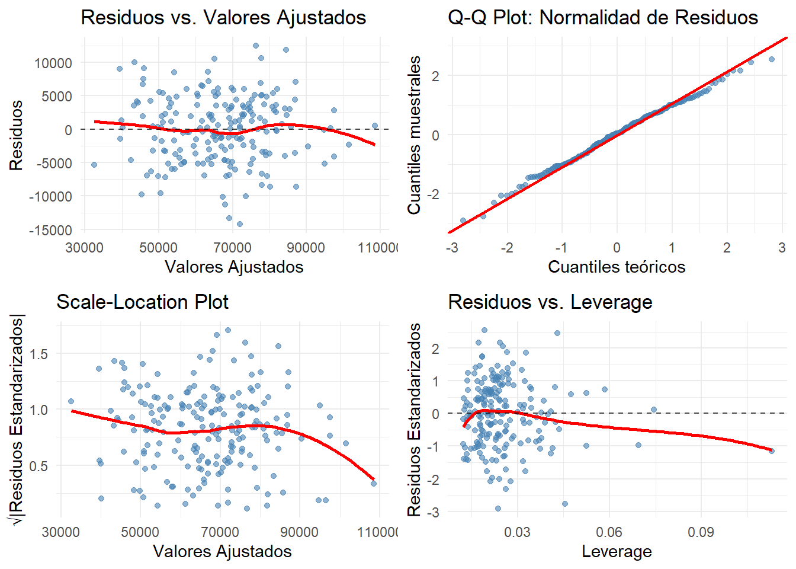
6.5.3 Detección de observaciones influyentes
| obs_number | leverage | cooks_d | .std.resid |
|---|---|---|---|
| 116 | 0.0456 | 0.0734 | -2.7712 |
| 196 | 0.0430 | 0.0540 | 2.4496 |
| 91 | 0.0236 | 0.0413 | -2.9211 |
| 72 | 0.1130 | 0.0334 | -1.1458 |
| 165 | 0.0261 | 0.0287 | -2.3121 |
| 49 | 0.0192 | 0.0255 | 2.5514 |
| 136 | 0.0278 | 0.0245 | -2.0720 |
| 113 | 0.0328 | 0.0234 | 1.8572 |
| 130 | 0.0243 | 0.0233 | 2.1602 |
| 163 | 0.0251 | 0.0217 | 2.0500 |
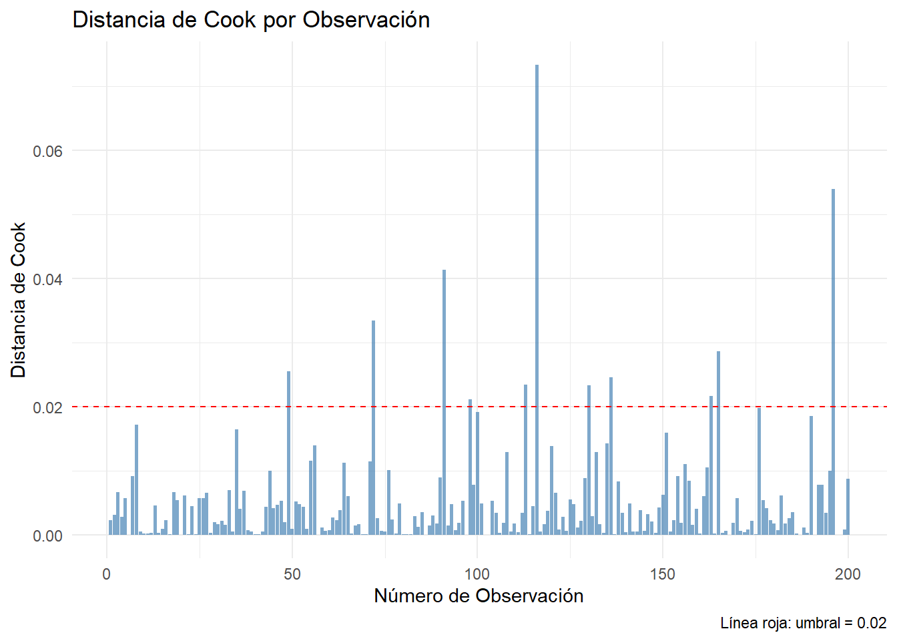
6.6 Violaciones de los Supuestos y Remedios
6.6.1 Heteroscedasticidad
La heteroscedasticidad ocurre cuando \(\text{Var}(\varepsilon_i|X_i) \neq \sigma^2\).
6.6.1.1 Detección
##
## studentized Breusch-Pagan test
##
## data: modelo_multiple
## BP = 8.8749, df = 4, p-value = 0.0643##
## studentized Breusch-Pagan test
##
## data: modelo_multiple
## BP = 0.37302, df = 2, p-value = 0.8299## Non-constant Variance Score Test
## Variance formula: ~ fitted.values
## Chisquare = 0.3056539, Df = 1, p = 0.580366.6.1.2 Remedios
- Errores estándar robustos (HC):
| Coeficiente | Clásicos | HC0 (White) | HC1 | HC2 | HC3 |
|---|---|---|---|---|---|
| (Intercept) | 3405.0619 | 3535.9458 | 3580.9915 | 3618.3737 | 3704.4184 |
| edad | 156.2199 | 164.5280 | 166.6239 | 168.1914 | 172.0031 |
| experiencia | 164.2059 | 170.0246 | 172.1906 | 173.5876 | 177.2852 |
| educacionSecundaria | 833.3520 | 869.4293 | 880.5053 | 881.1232 | 893.0479 |
| educacionUniversidad | 918.7004 | 889.1385 | 900.4656 | 901.4941 | 914.0654 |
##
## t test of coefficients:
##
## Estimate Std. Error t value Pr(>|t|)
## (Intercept) 20692.47 3580.99 5.7784 2.946e-08 ***
## edad 997.82 166.62 5.9885 1.002e-08 ***
## experiencia 297.93 172.19 1.7302 0.08517 .
## educacionSecundaria 7319.87 880.51 8.3133 1.570e-14 ***
## educacionUniversidad 14576.77 900.47 16.1880 < 2.2e-16 ***
## ---
## Signif. codes: 0 '***' 0.001 '**' 0.01 '*' 0.05 '.' 0.1 ' ' 1- Transformaciones de variables:
| Modelo | BP_estadistico | p_valor | Conclusion |
|---|---|---|---|
| Original | 8.8749 | 0.0643 | Homoscedasticidad |
| Log-log | 20.2938 | 0.0004 | Heteroscedasticidad presente |
6.6.2 Multicolinealidad
Problema cuando las variables explicativas están altamente correlacionadas.
6.6.2.1 Detección mediante VIF
| Variable | VIF | Tolerancia | Interpretacion | |
|---|---|---|---|---|
| edad | edad | 17.706 | 0.056 | Multicolinealidad severa |
| experiencia | experiencia | 17.683 | 0.057 | Multicolinealidad severa |
| educacion | educacion | 1.011 | 0.989 | Sin problema |
6.6.2.2 Remedios para multicolinealidad
## Cargando paquete requerido: princomp## Warning in library(package, lib.loc = lib.loc, character.only = TRUE, logical.return = TRUE, : no hay
## paquete llamado 'princomp'| Modelo | VIF_edad | VIF_experiencia |
|---|---|---|
| Original | NA | NA |
| Centrado | NA | NA |
6.6.3 Autocorrelación (Series de Tiempo)
Relevante cuando las observaciones tienen orden temporal.
##
## Durbin-Watson test
##
## data: modelo_tiempo
## DW = 1.7104, p-value = 0.05872
## alternative hypothesis: true autocorrelation is greater than 0##
## Breusch-Godfrey test for serial correlation of order up to 2
##
## data: modelo_tiempo
## LM test = 2.6754, df = 2, p-value = 0.2624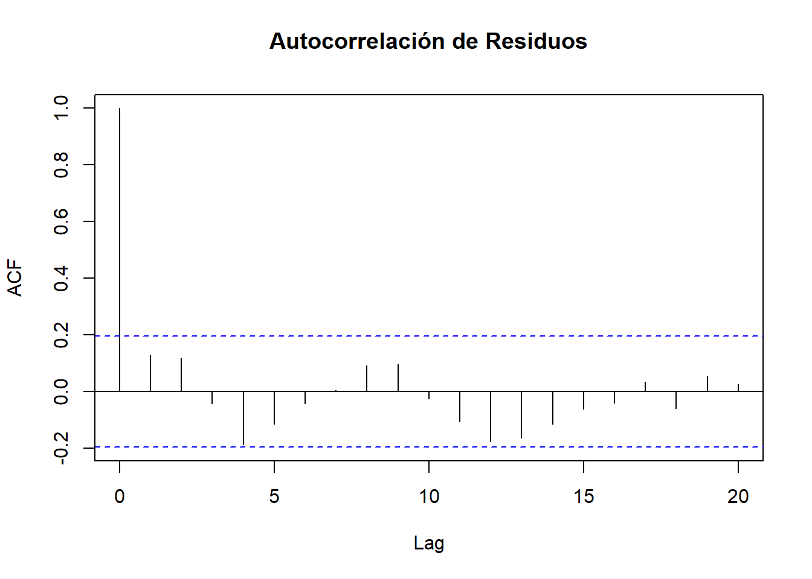
6.7 Selección de Variables y Extensiones del Modelo
6.7.1 Selección de Variables y Modelos
6.7.1.1 Criterios de información
Los criterios AIC y BIC penalizan la complejidad del modelo:
- AIC: \[\begin{equation} AIC = n \ln(\hat{\sigma}^2) + 2k \end{equation}\]
- BIC: \[\begin{equation} BIC = n \ln(\hat{\sigma}^2) + k \ln(n) \end{equation}\]
Menor valor indica mejor ajuste penalizado.
| Modelo | r.squared | adj.r.squared | AIC | BIC | df | logLik | delta_AIC | delta_BIC |
|---|---|---|---|---|---|---|---|---|
| Completo | 0.883 | 0.880 | 3976.526 | 3996.316 | 4 | -1982.263 | 0.000 | 0.000 |
| Con interacción | 0.883 | 0.879 | 3978.519 | 4001.607 | 5 | -1982.259 | 1.993 | 5.291 |
| Solo edad | 0.731 | 0.729 | 4136.509 | 4146.404 | 1 | -2065.254 | 159.983 | 150.088 |
| Edad + Experiencia | 0.731 | 0.728 | 4138.454 | 4151.647 | 2 | -2065.227 | 161.928 | 155.332 |
| Solo experiencia | 0.692 | 0.691 | 4163.086 | 4172.981 | 1 | -2078.543 | 186.560 | 176.665 |
| Solo educacion | 0.173 | 0.165 | 4362.788 | 4375.981 | 2 | -2177.394 | 386.262 | 379.665 |
6.7.1.2 Selección automática de variables
| Método | Fórmula | AIC | R_squared |
|---|---|---|---|
| Forward | salario ~ edad + educacion + experiencia | 3976.526 | 0.8825 |
| Backward | salario ~ edad + I(edad^2) + experiencia + I(experiencia^2) + educacion + edad:experiencia | 3979.861 | 0.8841 |
| Both | salario ~ edad + I(edad^2) + experiencia + I(experiencia^2) + educacion + edad:experiencia | 3979.861 | 0.8841 |
6.7.1.3 Validación cruzada para selección
| Modelo | r.squared | AIC | BIC | RMSE_CV |
|---|---|---|---|---|
| Con interacción | 0.8825 | 3978.519 | 4001.607 | 4974.539 |
| Completo | 0.8825 | 3976.526 | 3996.316 | 4987.617 |
| Solo edad | 0.7306 | 4136.509 | 4146.404 | 7350.871 |
| Edad + Experiencia | 0.7306 | 4138.454 | 4151.647 | 7496.063 |
| Solo experiencia | 0.6923 | 4163.086 | 4172.980 | 7906.562 |
| Solo educacion | 0.1731 | 4362.788 | 4375.981 | 12967.654 |
6.7.2 Extensiones del Modelo Lineal
6.7.2.1 Variables categóricas y contrastes
## [1] "Primaria" "Secundaria" "Universidad"## Secundaria Universidad
## Primaria 0 0
## Secundaria 1 0
## Universidad 0 1| Contraste | term | estimate | std.error | p.value |
|---|---|---|---|---|
| Treatment | educacionSecundaria | 7319.8716 | 833.3520 | 0.0000 |
| Treatment | educacionUniversidad | 14576.7678 | 918.7004 | 0.0000 |
| Sum | educacion1 | -7298.8798 | 510.1630 | 0.0000 |
| Sum | educacion2 | 20.9918 | 473.0623 | 0.9647 |
6.7.2.2 Términos de interacción
| term | estimate | std.error | statistic | p.value |
|---|---|---|---|---|
| (Intercept) | 21708.081 | 3729.121 | 5.821 | 0.000 |
| edad | 971.042 | 161.416 | 6.016 | 0.000 |
| educacion2 | 6179.504 | 3013.293 | 2.051 | 0.042 |
| educacion3 | 11194.238 | 3842.483 | 2.913 | 0.004 |
| experiencia | 291.350 | 165.127 | 1.764 | 0.079 |
| edad:educacion2 | 32.864 | 83.434 | 0.394 | 0.694 |
| edad:educacion3 | 95.930 | 105.793 | 0.907 | 0.366 |
## `geom_smooth()` using formula = 'y ~ x'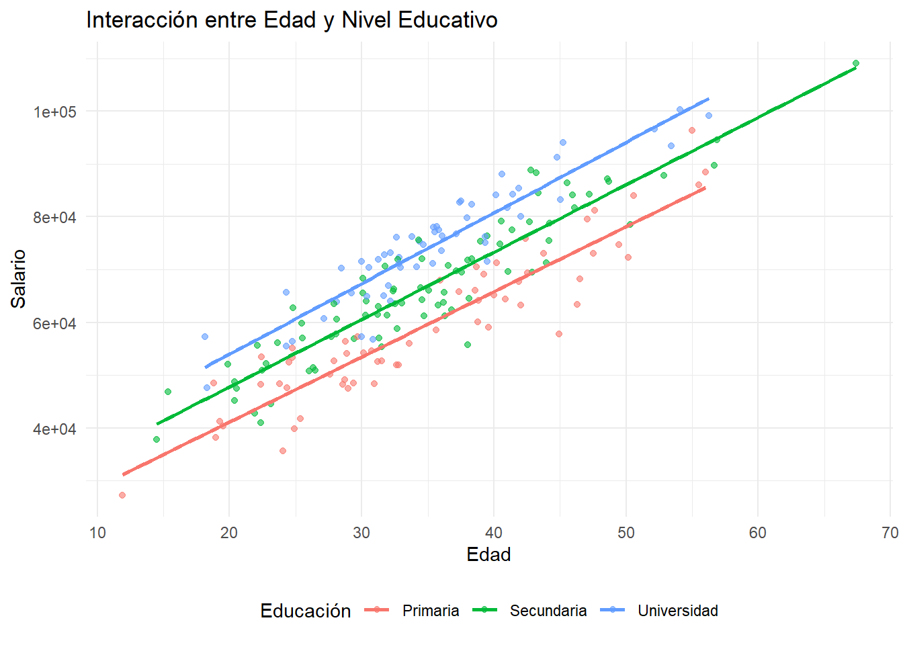
## Analysis of Variance Table
##
## Model 1: salario ~ edad + experiencia + educacion
## Model 2: salario ~ edad * educacion + experiencia
## Res.Df RSS Df Sum of Sq F Pr(>F)
## 1 195 4757889304
## 2 193 4737705612 2 20183692 0.4111 0.66356.7.2.3 Transformaciones no lineales
| Modelo | R_squared | AIC | BIC |
|---|---|---|---|
| Lineal | 0.8825 | 3976.526 | 3996.316 |
| Polinomial orden 2 | 0.8826 | 3980.393 | 4006.780 |
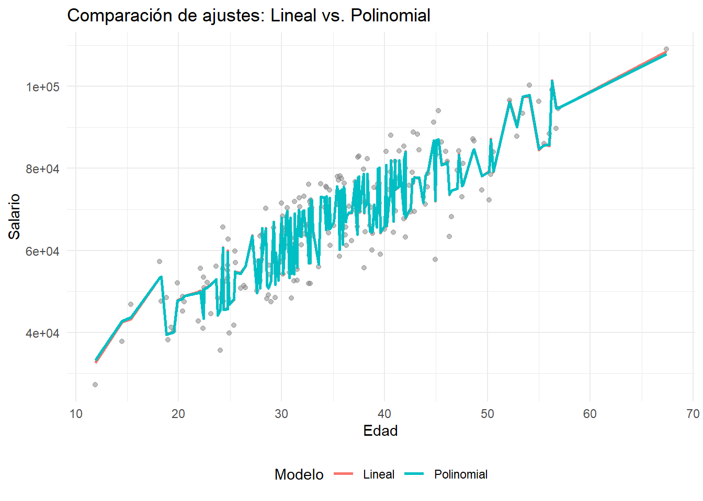
6.7.2.4 Transformaciones logarítmicas
## salario edad experiencia
## Min. : 27244 Min. :11.91 Min. : 0.000
## 1st Qu.: 56271 1st Qu.:28.74 1st Qu.: 6.965
## Median : 65958 Median :34.41 Median :12.380
## Mean : 66599 Mean :34.91 Mean :13.255
## 3rd Qu.: 76128 3rd Qu.:40.68 3rd Qu.:18.973
## Max. :109101 Max. :67.41 Max. :44.629| Modelo | Especificación | Interpretación_β |
|---|---|---|
| Lineal | Y = β₀ + β₁X | Cambio absoluto en Y por unidad de X |
| Log-lin | ln(Y) = β₀ + β₁X | Cambio porcentual en Y por unidad de X (≈ 100×β₁%) |
| Lin-log | Y = β₀ + β₁ln(X) | Cambio absoluto en Y por 1% de cambio en X (≈ β₁/100) |
| Log-log | ln(Y) = β₀ + β₁ln(X) | Elasticidad: cambio porcentual en Y por 1% de cambio en X |
| Modelo | R_squared_original_scale |
|---|---|
| Lineal | 0.6791 |
| Log-lin | 0.6585 |
| Lin-log | 0.6793 |
| Log-log | 0.6809 |
6.8 Evaluación Predictiva y Validación
6.8.1 División entrenamiento-prueba
##
## Primaria Secundaria Universidad
## 0.2977099 0.4122137 0.2900763##
## Primaria Secundaria Universidad
## 0.2962963 0.4074074 0.29629636.8.2 Métricas de evaluación predictiva
## Warning: contrasts dropped from factor educacion
## Warning: contrasts dropped from factor educacion
## Warning: contrasts dropped from factor educacion| Modelo | RMSE | MAE | MAPE | R2_test |
|---|---|---|---|---|
| Lineal simple | 8050.289 | 6298.384 | 10.007 | 0.600 |
| Múltiple | 4903.629 | 3639.305 | 5.906 | 0.854 |
| Polinomial | 4842.077 | 3572.242 | 5.820 | 0.857 |
| Con interacciones | 4888.792 | 3636.790 | 5.897 | 0.855 |
## Warning: contrasts dropped from factor educacion## `geom_smooth()` using formula = 'y ~ x'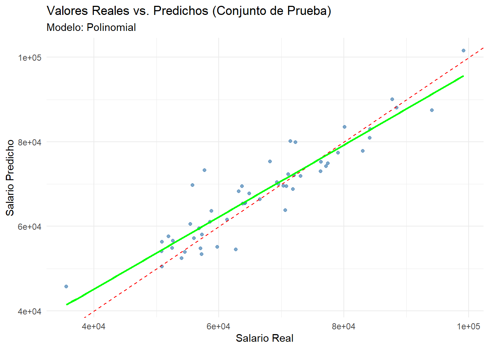
6.8.3 Validación cruzada k-fold
## Warning: contrasts dropped from factor educacion
## Warning: contrasts dropped from factor educacion
## Warning: contrasts dropped from factor educacion
## Warning: contrasts dropped from factor educacion
## Warning: contrasts dropped from factor educacion
## Warning: contrasts dropped from factor educacion
## Warning: contrasts dropped from factor educacion
## Warning: contrasts dropped from factor educacion
## Warning: contrasts dropped from factor educacion
## Warning: contrasts dropped from factor educacion
## Warning: contrasts dropped from factor educacion
## Warning: contrasts dropped from factor educacion
## Warning: contrasts dropped from factor educacion
## Warning: contrasts dropped from factor educacion
## Warning: contrasts dropped from factor educacion
## Warning: contrasts dropped from factor educacion
## Warning: contrasts dropped from factor educacion
## Warning: contrasts dropped from factor educacion
## Warning: contrasts dropped from factor educacion
## Warning: contrasts dropped from factor educacion
## Warning: contrasts dropped from factor educacion
## Warning: contrasts dropped from factor educacion
## Warning: contrasts dropped from factor educacion
## Warning: contrasts dropped from factor educacion
## Warning: contrasts dropped from factor educacion
## Warning: contrasts dropped from factor educacion
## Warning: contrasts dropped from factor educacion
## Warning: contrasts dropped from factor educacion
## Warning: contrasts dropped from factor educacion
## Warning: contrasts dropped from factor educacion| Modelo | RMSE_mean | RMSE_sd | MAE_mean | MAE_sd |
|---|---|---|---|---|
| Simple | 7931.286 | 802.867 | 6521.248 | 589.677 |
| Multiple | 4966.527 | 989.093 | 4040.838 | 851.957 |
| Polinomial | 4988.095 | 947.505 | 4026.032 | 823.031 |
| Interacciones | 5011.097 | 1021.473 | 4079.546 | 874.988 |
6.9 Modelos GLM y Técnicas de Regularización
6.9.1 Introducción a Modelos Lineales Generalizados (GLM)
6.9.1.1 Extensión más allá de la normalidad
Los GLM extienden la regresión lineal a variables respuesta no normales mediante:
- Función de enlace \(g(\mu)\): conecta la media \(\mu = E(Y|X)\) con el predictor lineal
- Familia exponencial: especifica la distribución de \(Y\)
6.9.1.2 Regresión logística binaria
Para variable respuesta binaria \(Y \in \{0,1\}\):
\[\begin{equation} \log\left(\frac{p}{1-p}\right) = \beta_0 + \beta_1 X_1 + \cdots + \beta_k X_k \end{equation}\]
donde \(p = P(Y=1|X)\).
| term | estimate | std.error | statistic | p.value | conf.low | conf.high |
|---|---|---|---|---|---|---|
| (Intercept) | 0.022 | 2.317 | -1.649 | 0.099 | 0.000 | 1.867 |
| edad | 1.149 | 0.103 | 1.353 | 0.176 | 0.943 | 1.414 |
| experiencia | 1.022 | 0.102 | 0.210 | 0.834 | 0.835 | 1.248 |
| educacion2 | 0.858 | 0.456 | -0.336 | 0.737 | 0.345 | 2.086 |
| educacion3 | 2.651 | 0.575 | 1.695 | 0.090 | 0.886 | 8.692 |
## Interpretación de Odds Ratios:## - Edad: Por cada año adicional, las odds de alta paga se multiplican por 1.149## - Universidad vs Primaria: Las odds se multiplican por 2.651## Setting levels: control = No, case = Si## Setting direction: controls < cases##
## Área bajo la curva ROC: 0.806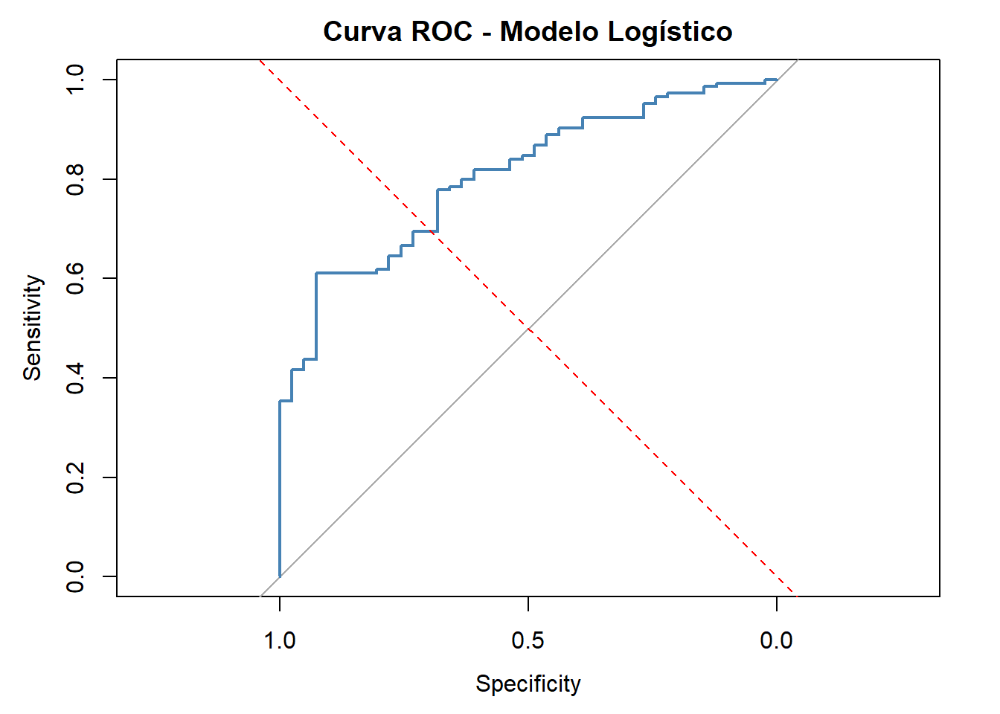
6.9.2 Técnicas de Regularización: Ridge y LASSO
6.9.2.1 Introducción a la regularización
Cuando \(p \approx n\) o \(p > n\), o cuando hay multicolinealidad severa, MCO puede ser inestable. Las técnicas de regularización añaden penalizaciones:
- Ridge: \[\begin{equation} \min_{\beta} \|Y - X\beta\|_2^2 + \lambda \|\beta\|_2^2 \end{equation}\]
- LASSO: \[\begin{equation} \min_{\beta} \|Y - X\beta\|_2^2 + \lambda \|\beta\|_1 \end{equation}\]
- Elastic Net: Combinación de ambas
| Variable | MCO | Ridge | LASSO | ElasticNet |
|---|---|---|---|---|
| edad | 932.8464 | 696.4409 | 937.1110 | 861.1700 |
| experiencia | 366.6502 | 551.9123 | 355.8014 | 420.7625 |
| educacionPrimaria | NA | -7041.3959 | -7395.3385 | -7277.9026 |
| educacionSecundaria | NA | 28.7848 | 0.0000 | 0.0000 |
| educacionUniversidad | NA | 6996.8680 | 7215.5683 | 7124.1962 |
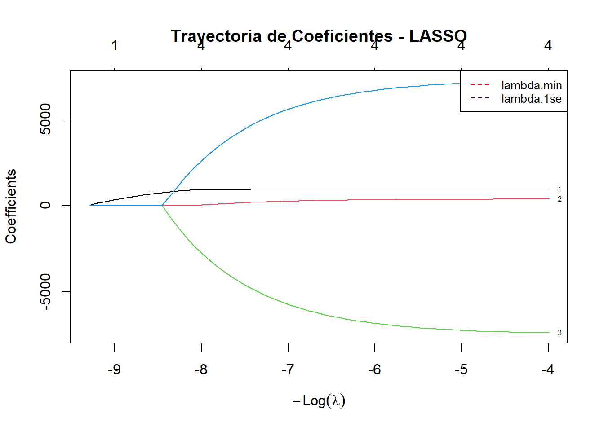
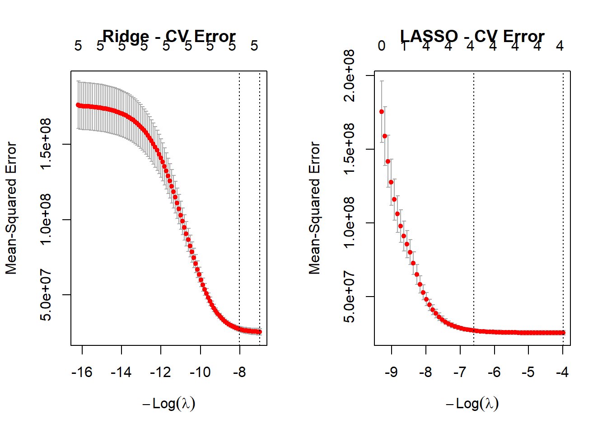
6.10 Práctica y Material Complementario
6.10.1 Análisis de Regresión en la Práctica: Flujo de Trabajo Completo
6.10.1.1 Metodología reproducible paso a paso
## === RESUMEN EXPLORATORIO ===
## Dimensiones: 185 5
## Variable objetivo: salario
##
## Variables numéricas:
## salario edad experiencia
## Min. : 35595 Min. :20.56 Min. : 0.06241
## 1st Qu.: 57727 1st Qu.:30.16 1st Qu.: 8.03052
## Median : 68198 Median :35.41 Median :12.98361
## Mean : 68336 Mean :36.21 Mean :14.32956
## 3rd Qu.: 76370 3rd Qu.:41.37 3rd Qu.:19.61531
## Max. :109101 Max. :67.41 Max. :44.62903
##
## Variables categóricas:
## educacion : 55 76 54
## alta_paga : 41 144
##
## No hay valores faltantes.## Correlaciones altas (|r| > 0.8):
## edad - salario: 0.824
## experiencia - salario: 0.805
## salario - edad: 0.824
## experiencia - edad: 0.971
## salario - experiencia: 0.805
## edad - experiencia: 0.971##
## === DIAGNÓSTICOS DEL MODELO ===
## R² = 0.8825, R² ajustado = 0.8801
## AIC = 3976.53, BIC = 3996.32
##
## Pruebas de supuestos:
## Normalidad (Shapiro-Wilk): p = 0.8302 (Aceptar normalidad)
## Homoscedasticidad (BP): p = 0.0643 (Aceptar homoscedasticidad)
## Multicolinealidad (VIF máximo): 17.71 (Problemática)
## Observaciones influyentes (Cook > 4/n): 10 de 185## Warning: contrasts dropped from factor educacion
## Warning: contrasts dropped from factor educacion
## Warning: contrasts dropped from factor educacion
## Warning: contrasts dropped from factor educacion| Modelo | RMSE_test | MAE_test | R2_train | AIC_train | n_params |
|---|---|---|---|---|---|
| Básico | 5050.008 | 3807.203 | 0.8658 | 2568.525 | 5 |
| Completo | 5074.355 | 3822.790 | 0.8672 | 2575.205 | 9 |
| Con interacción | 5083.885 | 3829.504 | 0.8662 | 2572.153 | 7 |
| Con cuadrático | 5125.627 | 3912.181 | 0.8664 | 2569.990 | 6 |
6.10.1.2 Reporte automatizado de resultados
## === REPORTE EJECUTIVO DEL MODELO ===
##
## MODELO SELECCIONADO:
## salario ~ edad + experiencia + educacion
##
## MÉTRICAS DE AJUSTE:
## • R² = 86.3% (86.3% de la varianza explicada)
## • Error estándar residual = $4961
## • Significancia global: p < 0.000
##
## VARIABLES SIGNIFICATIVAS:
## • educacion3: $14785 [IC 95%: $12902, $16667]
## • educacion2: $7481 [IC 95%: $5748, $9215]
## • edad: $933 [IC 95%: $575, $1290]
## • experiencia: $367 [IC 95%: $6, $727]
##
## EVALUACIÓN DE SUPUESTOS:
## ⚠️ Posible heteroscedasticidad detectada
## Recomendación: Usar errores estándar robustos
## ⚠️ Multicolinealidad detectada (VIF máximo = 17.87 )
## Recomendación: Considerar eliminar variables redundantes
## ⚠️ 12 observaciones potencialmente influyentes detectadas
## Recomendación: Revisar observaciones con Cook's D > 0.0216
##
## RECOMENDACI ONES PARA USO:
## • Este modelo es apropiado para inferencia y predicción dentro del rango observado
## • Para predicciones fuera de muestra, validar supuestos en nuevos datos
## • Considerar intervalos de predicción para cuantificar incertidumbre6.10.2 Buenas Prácticas y Lista de Verificación
6.10.2.1 Checklist para análisis de regresión
Antes del modelado: - [ ] Exploración exhaustiva de datos (EDA) - [ ] Identificación de valores atípicos y faltantes - [ ] Análisis de correlaciones entre predictores - [ ] Definición clara del objetivo (inferencia vs. predicción)
Durante el modelado: - [ ] Especificación teórica justificada - [ ] Verificación de supuestos del MCRL - [ ] Evaluación de multicolinealidad (VIF < 5) - [ ] Detección de observaciones influyentes - [ ] Comparación de modelos alternativos
Después del modelado: - [ ] Validación en datos independientes - [ ] Interpretación sustantiva de coeficientes - [ ] Cuantificación de incertidumbre (intervalos) - [ ] Documentación del proceso analítico - [ ] Código reproducible disponible
6.10.4 Recursos Adicionales y Referencias
6.10.4.1 Lecturas recomendadas por nivel
Nivel Introductorio: - James et al. (2013): Excelente balance teoría-práctica, muchos ejemplos en R - Bruce et al. (2020): Enfoque moderno para científicos de datos - Gelman et al. (2020): Pedagogía ejemplar, integra inferencia y predicción
Nivel Intermedio: - Harrell Jr (2015): Estrategias avanzadas de modelado, énfasis en validación - Kuhn and Johnson (2019): Ingeniería de características y selección de predictores - Fox (2015): Análisis aplicado con extensiones a GLM
Nivel Avanzado: - Hastie et al. (2009): Fundamentos matemáticos del aprendizaje estadístico - Gujarati and Porter (2009): Econometría con énfasis en interpretación causal - Wooldridge (2015): Métodos econométricos modernos
6.10.4.2 Recursos en línea especializados
Hernández (2023) - “Modelos de Regresión con R”: Tutorial interactivo en español con casos reales colombianos. Disponible en: https://fhernanb.github.io/libro_regresion/
Fortou (2023) - “Laboratorio de Análisis de Datos”: Implementaciones prácticas con tidyverse y énfasis en reproducibilidad. Disponible en: https://bookdown.org/josefortou/lab-book/
Team (2023) - “Computational Data Analysis for the Life Sciences”: Métodos estadísticos modernos con R y Python. Disponible en: https://cdr-book.github.io/index.html
6.10.5 Resumen y Conclusiones
6.10.5.1 Puntos clave del capítulo
Fundamentos conceptuales: La regresión modela dependencia asimétrica, diferente de correlación. El término de error es crucial para validez estadística.
Metodología MCO: Mejor estimador lineal insesgado (BLUE) bajo supuestos del MCRL. Propiedades óptimas requieren verificación cuidadosa de supuestos.
Inferencia estadística: Pruebas t individuales, pruebas F conjuntas, intervalos de confianza y predicción. Distinguir significancia estadística de relevancia práctica.
Diagnósticos esenciales: Análisis de residuos, detección de observaciones influyentes, evaluación de multicolinealidad. Los gráficos son tan importantes como las pruebas formales.
Violaciones y remedios: Heteroscedasticidad (errores robustos), autocorrelación (MCG), multicolinealidad (selección/regularización). Cada problema requiere enfoque específico.
Extensiones prácticas: Variables categóricas, transformaciones, interacciones, introducción a GLM. El modelo lineal es punto de partida, no límite.
Validación predictiva: División train/test, validación cruzada, métricas fuera de muestra. Esencial para uso predictivo del modelo.
Reproducibilidad: Código documentado, decisiones justificadas, flujo de trabajo sistemático. La ciencia de datos es colaborativa y acumulativa.
6.10.5.2 Perspectivas futuras
El análisis de regresión tradicional se extiende naturalmente hacia:
- Machine Learning: Random forests, gradient boosting, redes neuronales
- Inferencia causal: Variables instrumentales, discontinuidades, experimentos naturales
- Big Data: Métodos escalables, computación distribuida, streaming
- Bayesiano: Incorporación de información previa, cuantificación de incertidumbre
Sin embargo, los principios fundamentales del modelado estadístico—especificación cuidadosa, verificación de supuestos, validación rigurosa—permanecen constantes sin importar la complejidad del método.
“Far better an approximate answer to the right question than an exact answer to the wrong question.” — John Tukey
La regresión lineal, por su interpretabilidad y solidez teórica, seguirá siendo herramienta fundamental en el arsenal del analista de datos moderno.